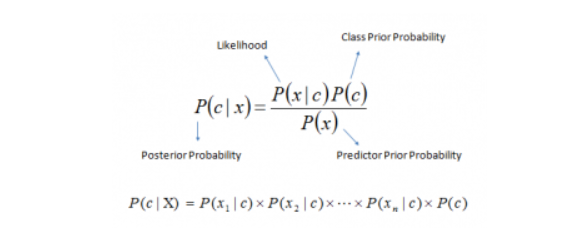

Introduction to Naive Bayes
(Section adapted from Analytics Vidhya)
Overview of Naive Bayes
Naive Bayes Classification is a supervised machine learning technique that is used to classify data into given classes/categories based on a set of features in a data set. Naive Bayes algorithims essentially model a distribution of inputs for a given class/category. Naive Bayes classifiers are considered very simple classfication models in machine learning. A Naive Bayes algorthim utilizes Bayes’ theorem in order to apply a probability that a given data observation belongs to a certain class or category. This probability is used then to assign a classification to the observation. This probability is called the posterior probability. The equation for posterior probability can be seen below.

In our case, ‘c’ is equal to the class when we are trying to predict and ‘x’ is equal to a predictor, an attribute of our dataset. Our computers are able to very quickly generate these probabilities for all of our predictors of interest and then assign a class to a data observation based on the highest posterior probability. It is important to note that an important assumption of Naive Bayes Classifcation is that all predictors are independent of each other.
Naive Bayes is a very fast and easy way to generate classification predicitions and performs very well in cases of categorical input variables compared to numerical variables (where normality is assumed for these variables). When the assumption of independence holds, Naive Bayes often performs better than other machine learning methods like logistic regression, but this assumption of independence can also serve as a major detriment to this algorithim as in real life, it is very unlikely we have a set of predictors that are completely independent.
Types of Naive Bayes Algorithms
In Python, under the sckit-learn library, there are a few main NB models we can use for classification. These models include: * Gaussian Naive Bayes * Multinomial Naive Bayes * Bernouolli Naive Bayes * Complement Naive Bayes * Categorical Naive Bayes
Gaussian Naive Bayes assumes that our features are all continous, numerical variables that follow a gausian distribution.
Multinomial Naive Bayes is used when we our features are discrete counts (a popular choice for text classification after vecotrizing a text data set).
Bernoulli Naive Bayes is used when our features are binary variables, typically seen as boolean vectors (0 or 1).
Complement Naive Bayes is a form of Multinomial NB where the complement of each class is used to calculate the model weights.
Categorical Naive Bayes is used when our features are all categorical variables. It should be noted that categorical variables must be encoded as numbers, typically encoded as ordinal numbers.
Project Applications
For this project, I will be using Multinomial NB for the purposes of trying to predict horse racing podium finishers (when a horse places 1st, 2nd, or 3rd in a race) and also for sentiment analysis of tweets, with the purposes of being able to analyze the sentiment behind tweets relating to HKJC horse racing. Being able to predict horse racing podium finishers is a signficant segement of any horse racing betting market. Creating a model to try and succesfully pin down the features that drive a horse to a successful podium finish could not only serve as a strong model in its own right, but also help inform more complex predictive models that incorportate both categorical and numerical variables to predict even more specific race outcomes.
Likewise, a tweet sentiment classification model will serve a couple purposes. For one, it will serve as a foundational element for creating a more complex predictive model that is able to measure public sentiment surrounding specific horses and races. It is with this sentiment measurement that an understanding of what is driving the creation of the parimutel betting odds from the lens of the betting public can be furthered analyzed. Such a classification model can also be potentially used to develop a more sophisticated predictive model that utilizes measures of public sentiment surrounding horses/races to measure ineffciencies in betting markets.